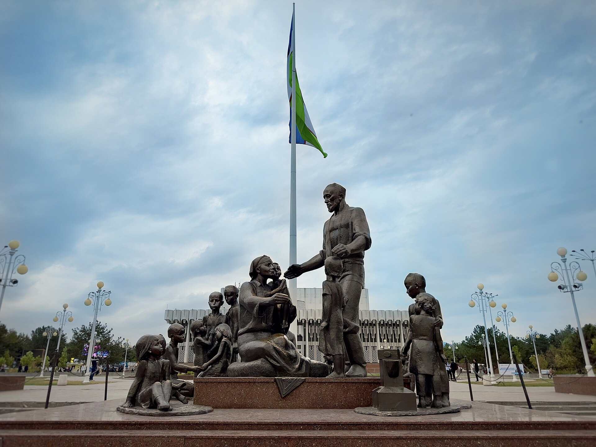

Uzbekistan as a Wartime Refuge: Evacuation and Deportation, 1941–1945
Between 1941 and 1945 Uzbekistan lived through one of the heaviest and most layered chapters of its migration history. On one side, hundreds of thousands of people, children, factories and institutions evacuated from the war zones; on the other, the forced deportation of entire peoples to the Uzbek SSR under Stalin. This article relies only on verified dates and figures; where sources disagree, a range is given.

During the Second World War (1941–1945) the Uzbek SSR became the hub of two parallel mass movements: a wave of evacuation of people fleeing the front, and the forced deportation of entire peoples by the Stalin regime. This period was a turning point in the region's migration history and is remembered today through Tashkent's Monument to the Friendship of Peoples.
War and the start of the evacuation
After Germany invaded the USSR on 22 June 1941, the Soviet government began moving people and industry eastward — beyond the Volga, to the Urals, Siberia and Central Asia. According to sources, the overall evacuation involved roughly 16 million people and is considered one of the largest organised civilian movements in history. Tashkent became one of the most sought-after cities of refuge.
The evacuees who reached Uzbekistan
Sources vary on how many evacuees reached Uzbekistan. Many cite more than one million, while some give up to about 1.5 million. A registration carried out in February 1942 recorded roughly 339,000 people across Uzbekistan; in Tashkent alone about 156,000 registration cards for Jewish refugees were filled out that February. This gap reflects the difference between formal registration and the overall flow.
Orphaned children
Children made up a large share of the evacuees. Many sources state that more than 200,000 children who had lost or become separated from their parents were moved to Uzbekistan. By some accounts, during the war years between 200 and 400 orphans arrived at Tashkent's railway station every day. The Central State Archive of Uzbekistan holds card catalogues (4 volumes) of children evacuated to the republic.
Factories, science and the arts found refuge
Industry moved with the people: according to sources, close to 100 (by some counts more) industrial enterprises were evacuated to Uzbekistan and put into operation — placed in Tashkent, Samarkand, Bukhara and Fergana. Research institutes, universities, theatres, film studios, writers and scientists were relocated there as well. Tashkent's reputation as a city of refuge long predated the war: Alexander Neverov's novella “Tashkent — City of Bread” (1923) depicts the city as a haven for refugees during the 1921–1922 Volga famine, and the name has remained tied to the city's hospitality ever since.
The Shamahmudov family
The Tashkent blacksmith Shaakhmed Shamahmudov and his wife Bahri Akramova took in and raised 15 orphaned children of different nationalities during the war — Russian, Belarusian, Moldovan, Ukrainian, Latvian, Kazakh, Tatar and others. Their devotion became a symbol of Uzbek hospitality. The Monument to the Friendship of Peoples dedicated to them, on Tashkent's Friendship of Peoples square, was unveiled in May 1982; its author was the sculptor Dmitry Ryabichev.
The monument's later history
In the years of independence the monument was moved several times: taken outside Tashkent in April 2008, relocated to the capital's Friendship Park in 2017, and only in May 2018, by order of President Shavkat Mirziyoyev, returned to its original site — Bunyodkor Square. The square and the monument were renamed several times over the years.
The deportation of entire peoples
Alongside the evacuation, the Uzbek SSR became one of the main destinations of the Stalin regime's deportations. Soviet Koreans had been forcibly moved from the Far East in October 1937 — roughly 170,000–180,000 people (one source gives 171,781) sent to Kazakhstan and Uzbekistan; though it predates the war, it was part of the same forced-migration policy. The Crimean Tatars were deported on 18–20 May 1944: at least 191,000 people in total, of whom 151,136 were sent specifically to the Uzbek SSR. The Meskhetian Turks were deported from Georgia on 15 November 1944 and settled mainly in Uzbekistan.
Harsh conditions and losses
The deported peoples — held under “special settler” status — lived through hunger, disease and hard labour in the first years, and mortality was high. Estimates of Crimean Tatar deaths vary widely by source: NKVD data record tens of thousands of deaths in 1944–1945, while some scholarly estimates put the overall mortality share at roughly 18 to 46 percent. Because the counts rest on incomplete NKVD records, there is no single agreed figure. Other deported peoples — the Volga Germans and the Chechens and Ingush — were sent mostly to Kazakhstan and Kyrgyzstan.
Legacy and later events
These peoples formed lasting communities in Uzbekistan. The clashes in the Fergana Valley in June 1989 severely affected the Meskhetian Turks, and tens of thousands moved to other republics. Even so, the memory of the wartime evacuation and of the Shamahmudov family remains central to Uzbekistan's remembrance of this period.
Sources
- Alamy (foto izohi): Oʻzbekistonga 1 milliondan ortiq evakuatsiya qilingan, 200 000+ yetim bola, Toshkentga kuniga 200–400 yetim; haykaltarosh Dmitriy Ryabichev, 1982
- uzbekistan.travel: Shamahmudovlar 15 yetimni asragan; monument 1982-yil mayda Doʻstlik maydonida ochilgan; koʻchirish tarixi (2008/2017/2018)
- Wikipedia — Deportation of the Crimean Tatars: 18–20-may 1944; jami ≥191 044; Oʻzbek SSRga 151 136; oʻlim baholari 18–46%
- Wikipedia — Deportation of the Meskhetian Turks: 15-noyabr 1944, Gruziyadan, asosan Oʻzbekistonga
- The Diplomat / Kiddle: Sovet koreyslari 1937-yil surguni (~171 781 kishi) Qozogʻiston va Oʻzbekistonga
- EHRI — Registration cards of Jewish refugees in Tashkent: 1942-yil fevral roʻyxati (~339 ming Oʻzbekistonda; Toshkentda ~156 ming yahudiy qochoq kartasi); bolalar kartotekasi
- Wikipedia — 1989 Fergana pogroms: 1989-yil iyun; mesxeti turklariga qarshi; oʻn minglab kishi koʻchib ketgan
- SovLit.net — Aleksandr Neverov, «Toshkent — non shahri» (1923), 1921–22 ocharchiligi va shaharning panoh obroʻsi